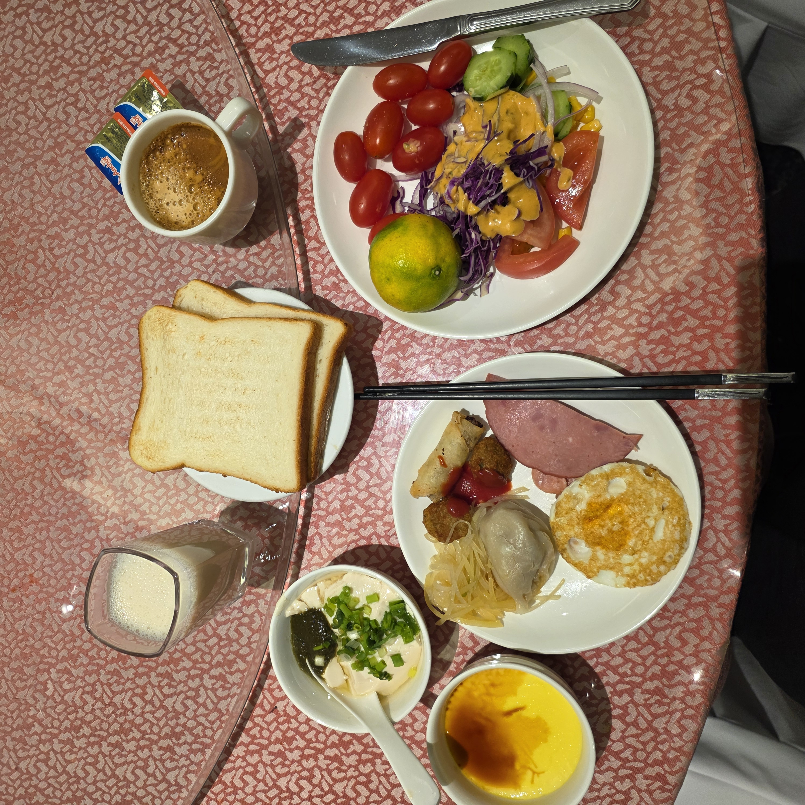
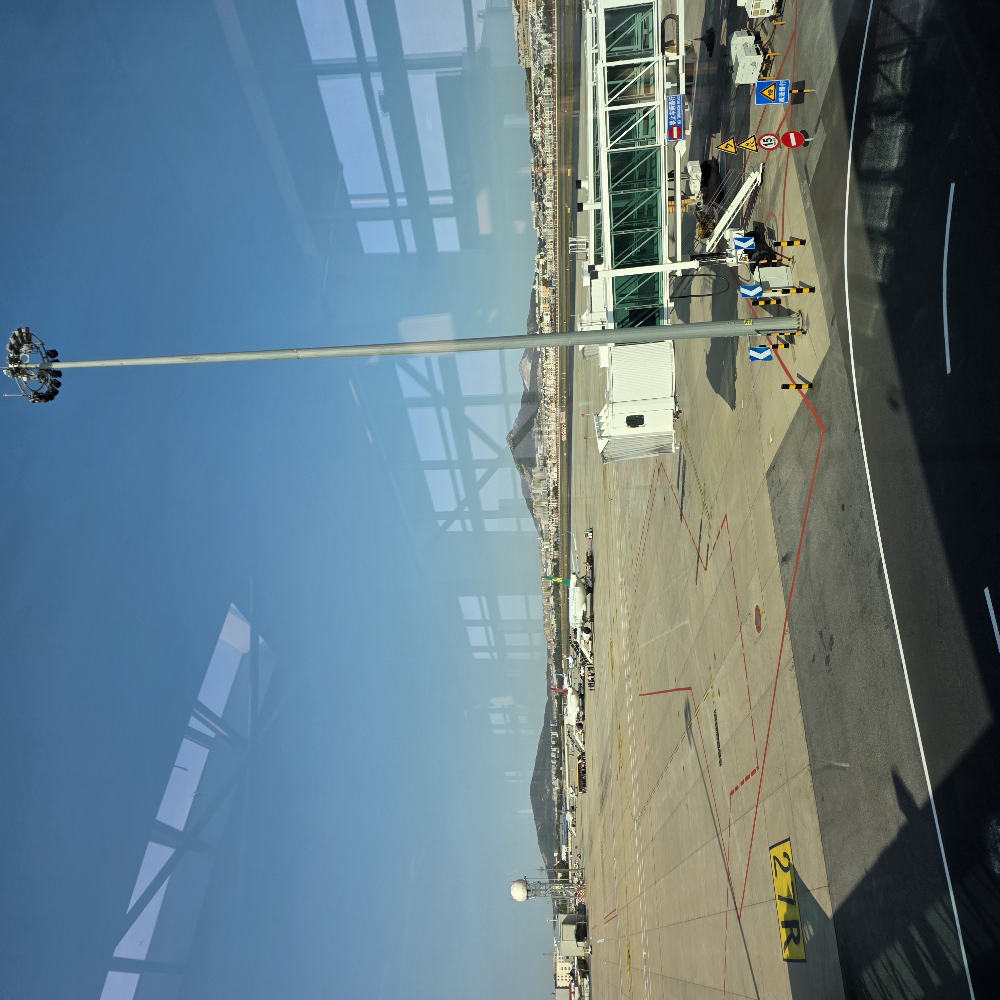

①편에서 — 운하를 미끄러지듯 지난 동방수성 곤돌라
여행의 마지막 날이 밝았습니다. 금요일 저녁에 인천을 떠나 다롄에서 이틀 밤을 보내고, 어느새 돌아가는 일요일 아침이에요.
셋째 날은 무리한 일정 대신 호텔 조식 뷔페로 느긋하게 배를 채우고 저우수이쯔(周水子) 공항에서 귀국하는 코스로 잡았습니다. 이번 마지막 편에서는 셋째 날 이야기와 함께, 2박3일을 통째로 돌아보며 교통·결제·환전·옷차림·경비·맛집을 실전 정보 위주로 풀어볼게요. 다롄행을 고민 중이시라면 도움이 되실 거예요.
떠나는 날 아침만큼은 서두르지 않고 여유롭게 먹기로 했어요. 호텔 조식 뷔페에서 볶음 요리와 채소, 빵과 과일을 접시 가득 담아 왔습니다.
중국 호텔 조식답게 담백한 죽·만두류부터 현지식 볶음까지 섞여 있어서, 마지막으로 현지 아침 분위기를 한 번 더 즐기기 좋았어요. 여행 내내 걸어 다닌 몸에 따뜻한 한 끼가 참 반가웠습니다.

체크아웃을 하고 저우수이쯔 국제공항으로 이동했습니다. 다롄 공항은 시내에서 멀지 않아 이동이 수월했어요.
수속을 마치고 탑승교로 걸어가는데 계류장에 늘어선 비행기와 맑은 아침 하늘이 눈에 담기더라고요. 인천–다롄 직항은 비행시간이 1시간~1시간 10분 남짓이라, 기내식 한 번 받고 나니 벌써 인천이었습니다. 이렇게 가까운 해외라니, 다음에 또 오고 싶어졌어요.

제가 다녀온 동선을 간단히 표로 정리했습니다. 하루 2~3곳씩 걷기 좋게 묶었고, 각 장소의 자세한 이야기는 ①~④편에 담아뒀어요.
| 날짜 | 동선 |
| 1일차 (10/24) | 인천→다롄 도착 → 동방수성 운하 곤돌라·시내 → 저녁 양꼬치 |
| 2일차 (10/25) | 성해광장·싱하이 다롄만대교 조망 → 러시아거리 산책 → 저녁 해선 요리 |
| 3일차 (10/26) | 호텔 조식 → 저우수이쯔 공항 → 귀국 |
완결편이라 기억에 남는 장면을 다시 꺼내봤어요. 다롄이 왜 바다도시라 불리는지 사진으로 느껴보세요.


다롄은 대중교통이 잘 갖춰져 있어서 다니기 편했어요.
다롄의 명물인 노면전차(트램)는 오래된 노선이 도심을 지나가는데, 관광 삼아 한 번쯤 타보면 옛 다롄의 정취가 느껴집니다. 지하철·버스는 QR 결제가 돼서 편했고, 공항과 시내를 오갈 땐 전용차나 디디(滴滴, 중국판 택시앱)가 편리했어요. 성해광장·러시아거리·중산광장처럼 붙어 있는 곳은 걷는 게 오히려 좋았습니다.
도로가 넓고 언덕도 있어서 편한 신발은 꼭 챙기시길 바라요.
중국 여행에서 제일 걱정되는 게 결제인데, 이제는 알리페이·위챗페이에 여권과 해외카드를 등록해두면 거의 다 됩니다. 식당·마트는 물론 노점·야시장까지 QR 스캔으로 다녔어요.
출국 전에 미리 여권 인증과 해외 카드 등록을 끝내두는 게 좋고, 카드는 유니온페이 계열이 수수료 면에서 유리한 편이었습니다. 현금은 일부만 환전해도 충분했어요. 환율은 1위안 ≈ 190원대 수준이었는데 시점마다 다르니 출발 전 확인하세요.
제가 다녀온 10월 말 기준으로 다롄은 서울보다 2~3도 낮고 일교차가 컸어요. 낮엔 걸으면 살짝 더울 정도인데, 해가 지고 바닷바람이 불면 제법 쌀쌀했습니다.
그래서 바람막이나 얇은 겉옷은 필수예요. 낮과 밤 온도 차가 크니 레이어드로 입어 겉옷을 걸쳤다 벗었다 하기 좋게 준비하시길 권합니다. 10월 하늘이 참 맑아서 사진 찍기에도 좋았어요.
경비는 환율·시즌·항공권 예약 시점에 따라 편차가 커서 정확한 총액을 단정하긴 어렵습니다. 항공·숙박·식비·관광을 아우른 대략 범위와 실전 정보를 표로 묶었으니 "감"으로만 참고해주세요.
| 항목 | 내용 (기준일 2026-07-15 · 변동 가능) |
| 비행 | 인천–다롄 직항 약 1시간~1시간 10분, 저우수이쯔 국제공항 |
| 교통 | 지하철·버스 QR, 노면전차(트램), 공항↔시내 전용차·디디 |
| 결제 | 알리페이·위챗페이(여권+해외카드)로 노점까지 해결, 유니온페이 유리 |
| 환율 | 1위안 ≈ 190원대 (변동) |
| 옷차림 | 10월 기준 서울보다 2~3도 낮음·일교차 큼 → 바람막이·겉옷 |
| 경비 | 항공+숙박+식비+관광 포함 대략 범위, 예약 시점·시즌·환율에 따라 편차 큼 |
항구도시 다롄은 해선(해산물)이 강점이고, 동북 지방 특유의 든든한 요리도 많았어요. 2박3일 동안 맛본 것들을 꼽아보면 이렇습니다.
과교미선(윈난식 쌀국수)으로 속을 따뜻하게 풀고, 해선 촨촨(꼬치를 육수에 담가 익히는 요리)으로 신선한 해산물을 즐겼어요. 양꼬치는 두말할 것 없이 좋았고, 항구답게 홍합 같은 조개류가 실했습니다. 혼자여도 부담 없는 1인 소훠궈, 러시아거리 근처의 러시아 초콜릿, 저녁을 마무리한 이자카야 한잔까지 다양하게 먹었어요.
가격은 메뉴·환율에 따라 다르니 방문 시점 기준 변동으로 봐주세요. 전반적으로 서울보다 물가 부담이 덜해 여러 가지 도전하기 좋았습니다.
좋았던 점은 뭐니 뭐니 해도 1시간대의 가까운 비행, QR로 간편한 결제, 바다·광장·근대건축이 어우러진 풍경, 다채로운 먹거리, 서울보다 여유로운 물가였어요.
아쉬운 점이라면 2박3일은 다 보기엔 조금 짧다는 것(넉넉히 보려면 3박4일 추천), 일교차와 바닷바람 대비가 필요하다는 점, 그리고 결제앱을 미리 등록해두지 않으면 초반에 살짝 헤맬 수 있다는 정도였습니다.
Q. 2박3일이면 충분한가요?
핵심 명소를 도는 데는 알찼지만, 근교·해양공원까지 넉넉히 보려면 3박4일을 권합니다.
Q. 중국어를 못해도 될까요?
QR 결제가 보편화돼 말 없이도 대부분 해결됩니다. 번역앱을 함께 쓰면 더 편해요.
Q. 현금은 얼마나?
대부분 QR 결제라 소액만 준비해도 충분했습니다.
Q. 10월 옷차림은?
서울보다 2~3도 낮고 바닷바람이 있어 바람막이·겉옷과 레이어드가 정답이었어요.
Q. 비행시간은?
인천에서 약 1시간~1시간 10분, 국내선처럼 가깝습니다.
이렇게 다롄 2박3일 여행기가 ①편부터 ⑤편까지 모두 마무리되었습니다. 가깝고 이국적인 데다 바다·근대 건축·먹거리가 골고루 있는 다롄, 짧게 다녀오기 참 좋았어요. 그동안 함께 읽어주셔서 감사합니다.